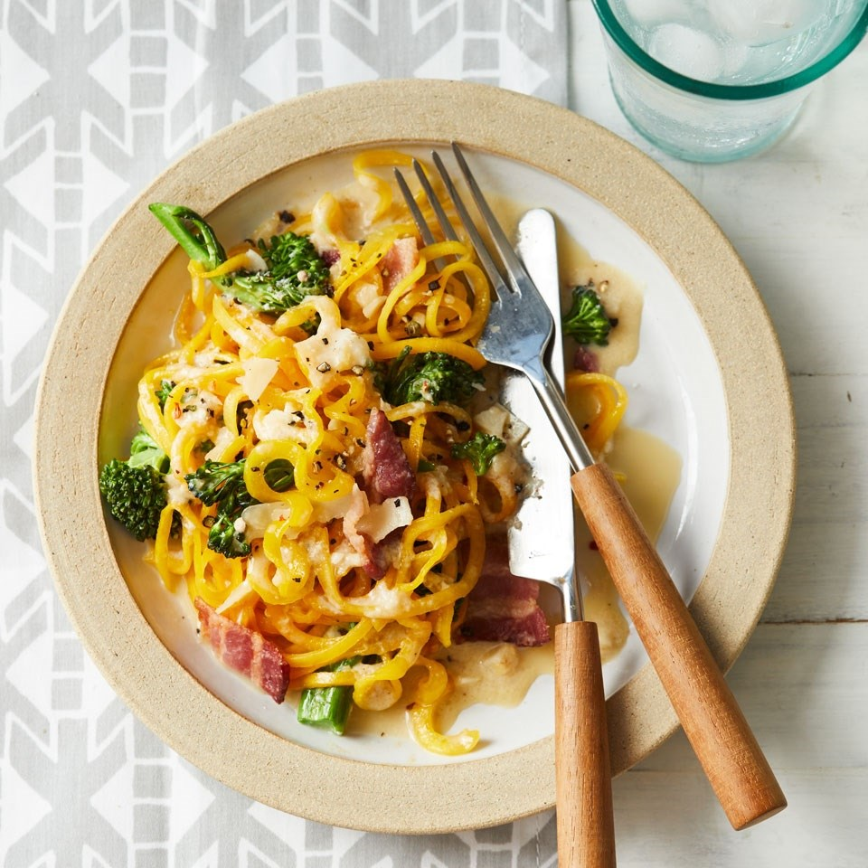
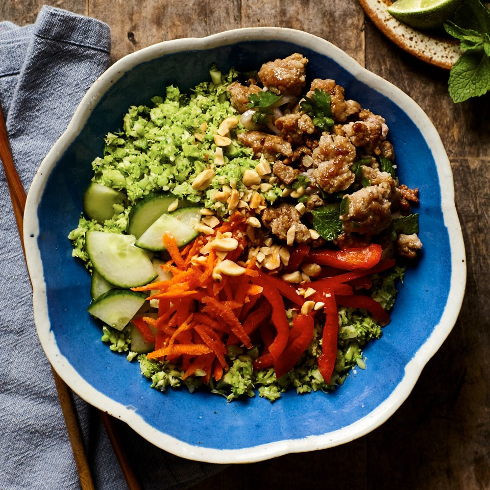
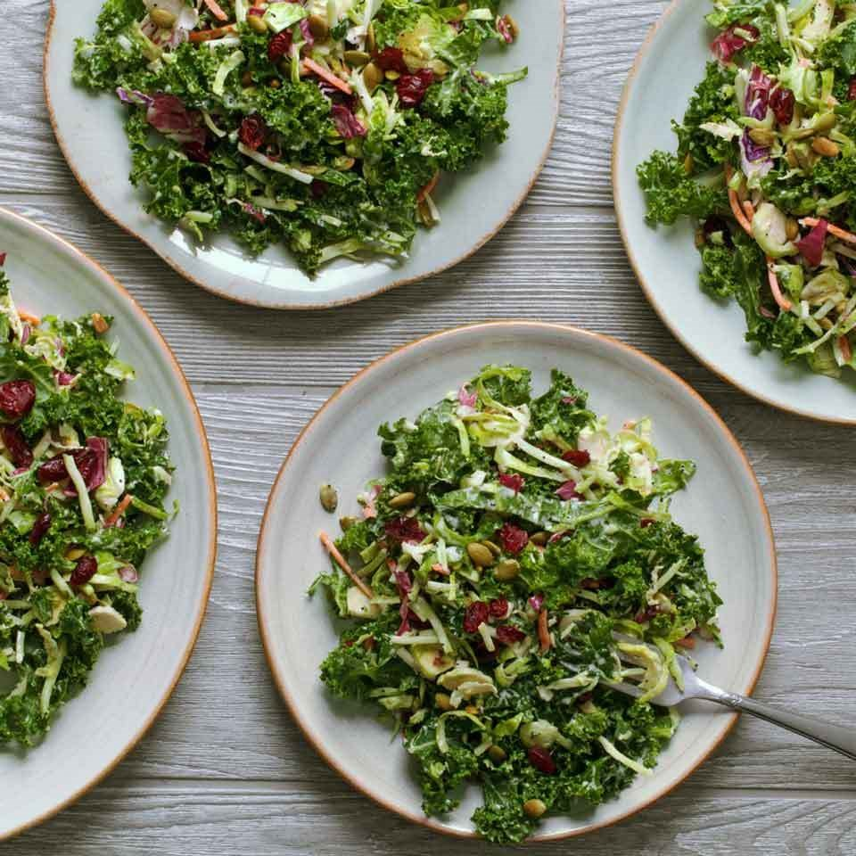
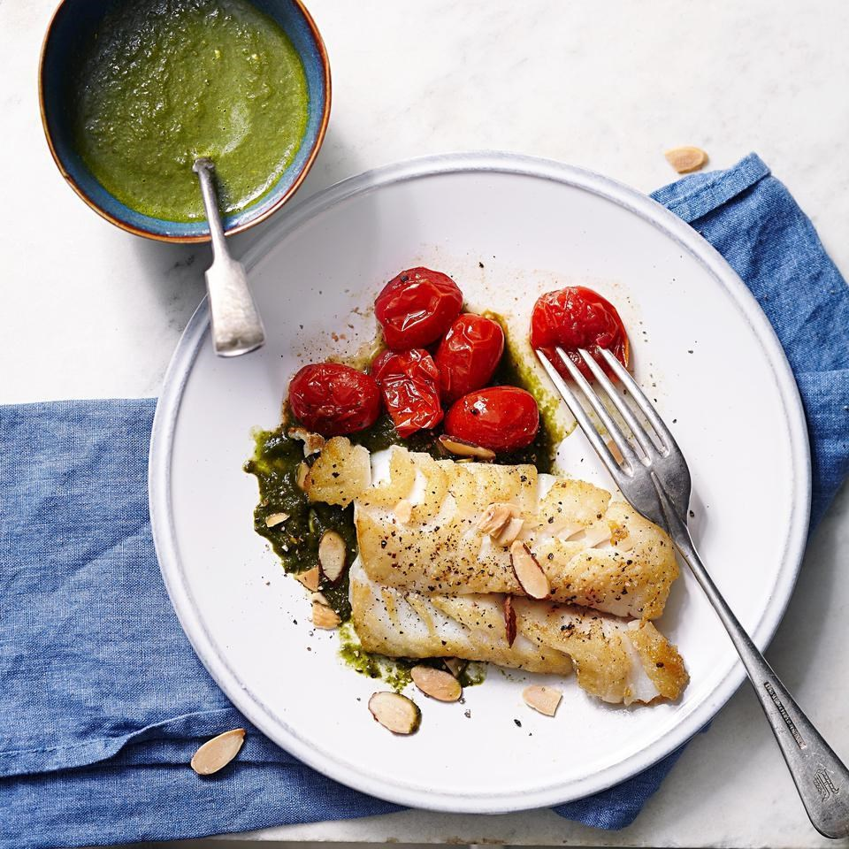
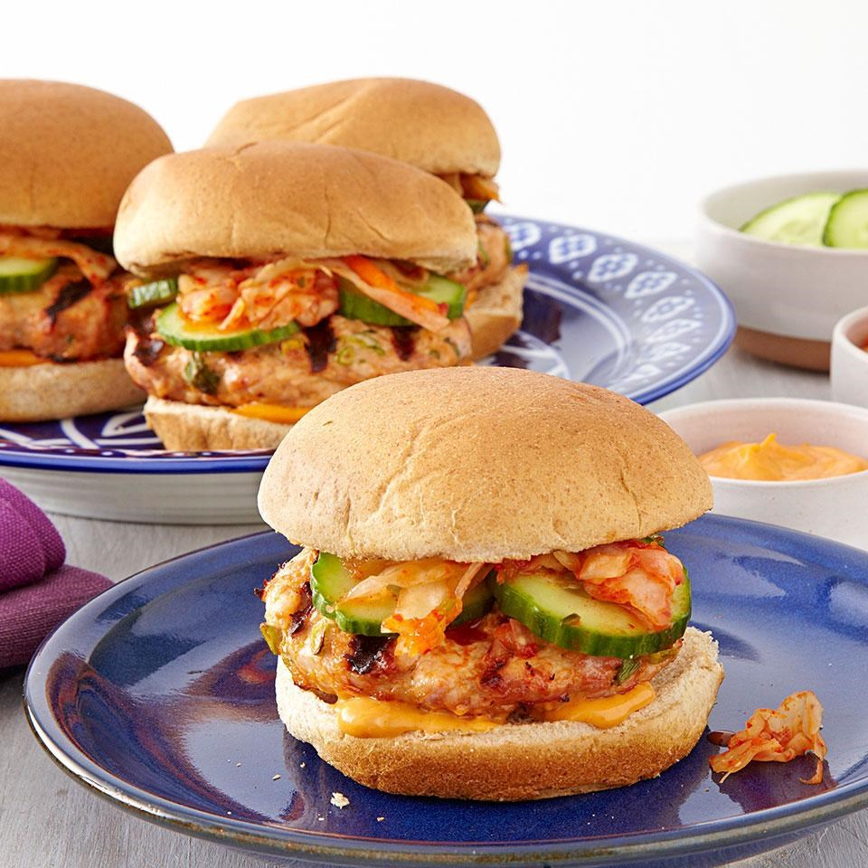

What Is the Ideal Meal Plan For You?
Answer the following questions to determine what meal plan best suits you.
You have not answered all of the questions yet.
You got the Butternut Squash Carbonara with Broccoli. You've never had carbonara quite like this! Loaded with veggies, this spiralized veggie noodle recipe is a healthy copycat of a traditional carbonara recipe. Butternut squash gets spiralized into long, tender noodles for a lower-carb version of this creamy, cheesy pasta dish. Look for a squash with a large, straight neck to make the longest veggie noodles.

You got the Vietnamese Chicken & Broccoli Rice Bowl meal plan. Broccoli gets a whirl in your food processor, with rice-like results, in this healthy dinner recipe. This veggie-packed carb-swap recipe saves you about 15 grams of carbs when compared to a standard rice bowl. Serve with hot sauce and limes for an extra kick.

You got the Kale Salad with Creamy Poppy Seed Dressing meal plan. The lightly sweet, creamy homemade poppy seed dressing takes this crunchy salad to the next level for a mouthwatering vegetable side dish or light lunch. Top with the 5-ingredient Paprika-Herb Rubbed Chicken for a heartier meal, ready and on the table in under 30 minutes.

You got the Seared Cod with Spinach-Lemon Sauce. Twenty-five minutes is all it takes to whip up this impressive yet simple fish dinner. A citrus-laced spinach sauce zests up delicate cod in this healthy recipe. If you can find Meyer lemons, use their sweeter juice instead of the regular lemon and orange juices. Serve with roasted cherry tomatoes and zucchini with angel hair pasta.

You got the Korean Turkey Burgers with Kimchi. This mouthwatering turkey burger recipe comes together quickly thanks to the help of some pre-prepared ingredients. Korean chile paste (also known as gochujang) blended into the ground turkey makes this turkey burger recipe incredibly moist and flavorful. Top these healthy turkey burgers with kimchi—a fermented mixture of cabbage and other vegetables—which can be found near other refrigerated Asian ingredients or near sauerkraut or pickles in well-stocked supermarkets or natural-foods stores.
